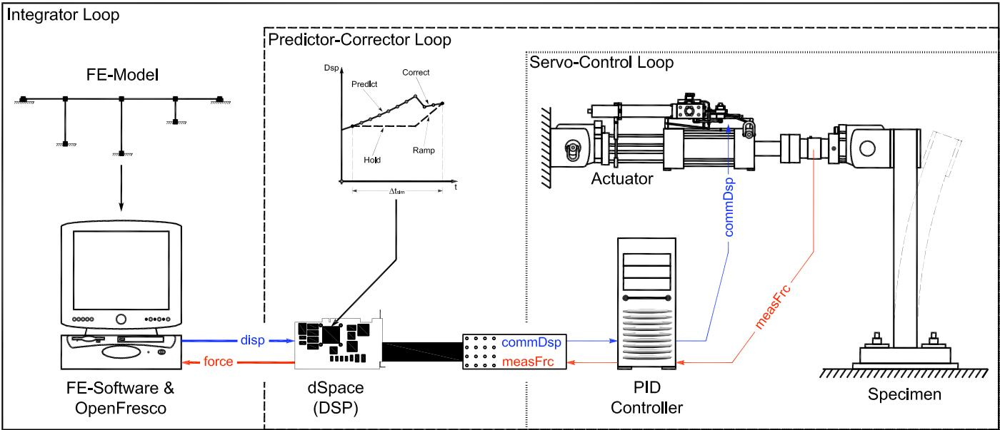

2.2. dSpace 实验控制
2.2.1. 命令
此命令用于构建 dSpace 实验控制对象。
expControl dSpace tag boardName -trialCP cpTags -outCP cpTags <-ctrlFilters (5 $filterTag)> <-daqFilters (5 $filterTag)>
$tag |
唯一控制标签 |
boardName |
dSpace 板卡名称（支持 DS1103 和 DS1104） |
$cpTags |
先前定义的控制点标签 |
$filterTag |
先前定义的滤波器标签标识；滤波器标签标识大小为 5（条目：[位移, 速度, 加速度, 力, 时间][disp, vel, accel, force, time]） |
2.2.2. 示例
# 定义实验信号滤波器
# expSignalFilter $tag $tag $error
expSignalFilter ErrorSimUndershoot 1 0.01
# 定义实验控制点
expControlPoint 1 1 disp
expControlPoint 2 1 disp 1 force
# 定义实验控制
# expControl dSpace $tag boardName -trialCP $cpTags -outCP $cpTags <-ctrlFilters (5 $filterTag)>
expControl dSpace 1 DS1104 -trialCP 1 -outCP 2 -ctrlFilters 1 0 0 0 0
上述示例命令用于与运行在 DS1103 数字信号处理器板卡上的 Simulink 模型进行通信，该模型使用位移进行预测和校正。ErrorSimUndershoot 信号滤波器应用于发送至控制系统的位移。
{kind=link}

图 2.1 dSpace 实验控制
2.2.3. 记录Recorder
在创建 ExpControlRecorder 对象时，对 dSpace 实验控制的有效查询包括（代码setResponse部分）：
控制（命令）信号：ctrlSig, ctrlSignal, ctrlSignals
数据采集（反馈）信号：daqSig, daqSignal, daqSignals
2.2.4. 参考
http://www.dspaceinc.com/ww/en/inc/home/products/hw/singbord.cfm